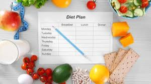
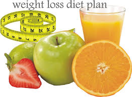
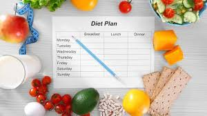
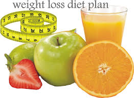

How to Prevent Obesity
Obesity is a chronic disease affecting more and more children, adolescents and adults:
Healthcare professionals are seeing earlier onset of Type 2 diabetes (normally an adult-onset disease), cardiovascular disease and obesity-related depression in children and adolescents. The longer a person is obese, the more significant obesity-related risk factors become. Given the chronic diseases and conditions associated with obesity, and the fact that obesity is difficult to treat, prevention is extremely important.
A primary reason that prevention of obesity is so vital in children is because the likelihood of obese becoming obese adults is thought to increase from about 20 percent at four years of age to 80 percent by adolescence.
Physical activity
There is a clear link between physical inactivity and chronic disease and premature death. Therefore, everyone should try to take part in appropriate levels of physical activity. The risks of engaging in physical activity are low, but the risks of poor health resulting from inactivity are high. The four UK Chief Medical Officer have issued recommendations as to the daily amount of physical activity people should be participating in to help to maintain health.
Food and nutrition
Eating high fat, energy dense foods can create an over eating effect and contribute to overweight and obesity. It is also recognised that evolving eating patterns have a key role to play, for example, there is more snacking and greater dependence on processed and prepared foods. 'A Fitter Future for All' contains actions which will work to redress our current eating habits and ensure that we can make healthier food choices.
Childhood Obesity Campaign
Tackling Childhood Obesity is a public health priority, with 1 in 4 children across the world now carrying excess weight.
Without action to reverse the trends we’re seeing in our own and our children’s weight and health, the next generation will be
beset with significant ill-health related to overweight and obesity, most of which is potentially preventable.
With research indicating a demand for practical solutions but in small, achievable steps, the campaign messaging will focus on
six core actions for parents, on a phased, three-year basis:
Our Centre provide many way for the patients who sever from obesity and people who want to prevent themself from obese. professional staff can give the best way after diagnosis
 


